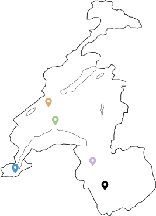

Semence de pays
Semences de pays développe une production de semences reproductibles, rustiques et adaptées à une agriculture biologique proche des cycles de la nature, en collaboration avec les initiatives nourricières de proximité.


Points de ventes

Chez Mamie Rue des Rois 17 1204 Genève Le Topinambour Avenue William-Fraisse 9 1006 Lausanne Ferme du Joran Chemin des Philosophes 15 1350 Orbe Le Grainier Route des Mines de Sel 1880 Bex Nouvelle Terre Rue du Grand-Verger 12 1920 Martigny
